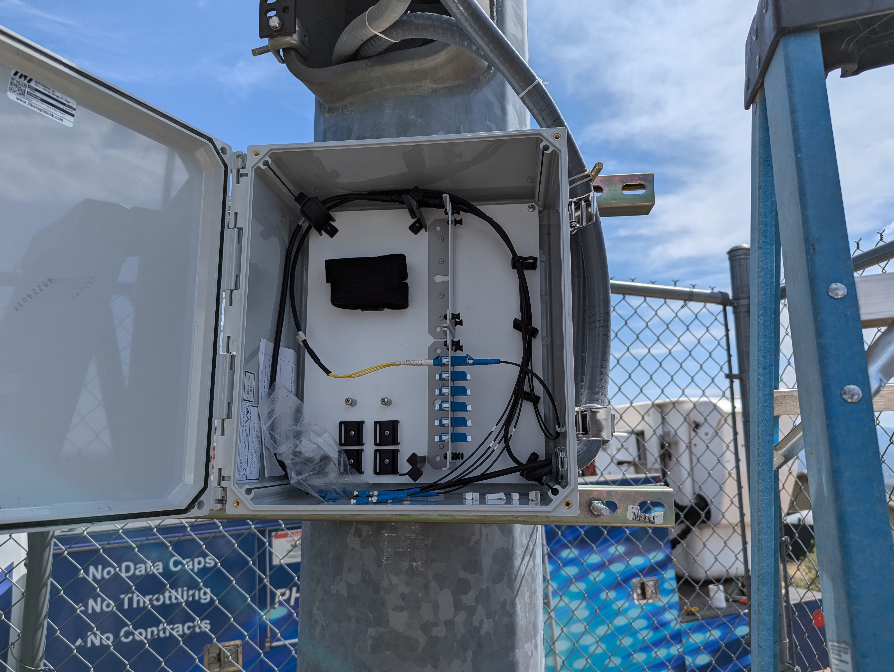
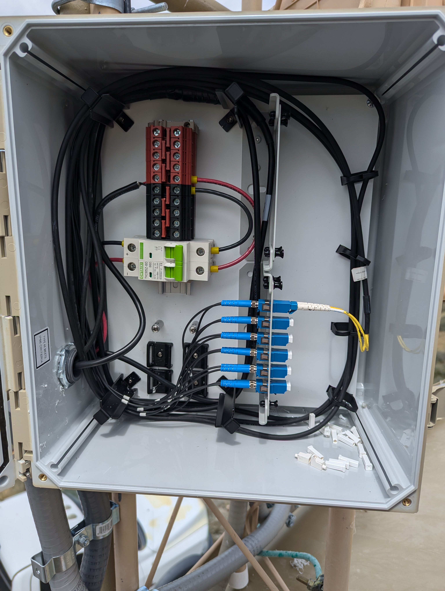
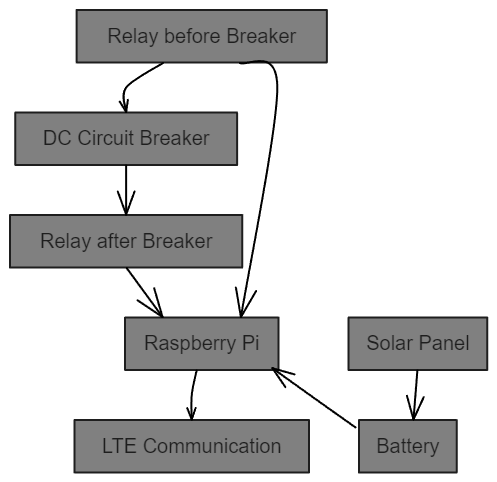
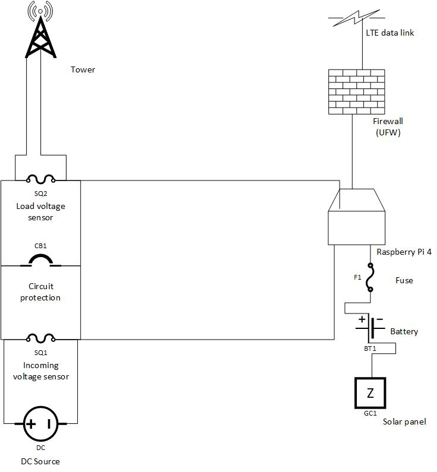
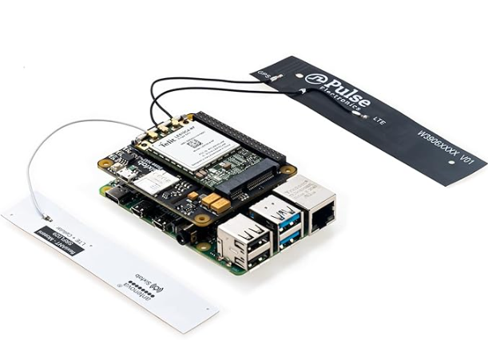
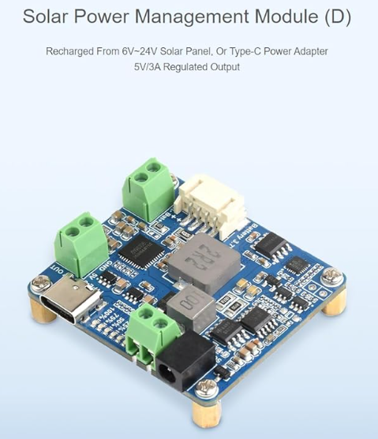

Innovation Claim
My modular tower-mounted design combines fiber and DC power distribution to reduce long cable runs and improve maintainability. The completed off-tower prototype demonstrates circuit monitoring and remote notifications using LoRaWAN.
Project Description
Based on my experience with fixed wireless infrastructure, I developed two field-deployed distribution iterations. I then built and tested a standalone monitoring prototype with an Arduino MKR WAN 1310, three INA219 sensors, a RAK LoRaWAN gateway, and a Python notification service.
Prototype Complete: November 22, 2026
Physical circuit fault and recovery tests passed for Incoming, Load 1, and Load 2. Email alerts were received, including a separate connection-loss notification. The video and results below document the functioning monitoring prototype.
Verified Monitoring Results
The Arduino monitors incoming power and two loads, confirms fault and recovery states across three samples, retains serial diagnostics, and transmits state changes plus a heartbeat every 60 seconds. The Python receiver stores telemetry in SQLite and suppresses duplicate circuit notifications.
Recorded Email Notifications
| Monitored circuit | Fault reading | Normal reading |
|---|---|---|
| Incoming | 5.57 V | 11.89 V |
| Load 1 | 5.58 V | 11.89 V |
| Load 2 | 5.56 V | 11.88 V |
These are separate fault and normal-state email records, not necessarily successive events in that order. A separate connection-loss notification reported a lack of readings for at least three minutes and thirty seconds.
PDF Email Notification Evidence
These public-facing PDF reproductions are transcribed from the received Gmail notification exports. Personal email addresses and private Gmail message URLs have been removed. Each file retains the original notification's event ID, measurement values, and timestamp. The recorded normal-state notifications preceded the fault notifications in this test series and should not be interpreted as subsequent recoveries from those exact faults.
Incoming DC circuit
- Incoming fault notification (5.57 V, event 29, PDF)
- Incoming normal-state notification (11.89 V, event 26, PDF)
Load 1
- Load 1 fault notification (5.58 V, event 30, format preview, PDF)
- Load 1 normal-state notification (11.89 V, event 27, PDF)
Load 2
- Load 2 fault notification (5.56 V, event 31, PDF)
- Load 2 normal-state notification (11.88 V, event 28, PDF)
Monitoring continuity
Monitor connection-loss notification (3 minutes 30 seconds, event 32, PDF)
Final Technical Demonstration
This video records the physical prototype and its working demonstration. It is supporting technical evidence, separate from the required five-minute SIP409 Showcase presentation.

Open the prototype walkthrough on YouTube
The five-minute SIP409 Showcase presentation is now published on YouTube. Watch it in the dedicated Showcase section below.
Five-Minute Showcase Presentation
This is the final SIP409 presentation, distinct from the longer technical walkthrough above. It introduces the fixed wireless infrastructure problem, the modular distribution innovation, the complete LoRaWAN monitoring path, and the demonstrated fault-notification results.
Watch the final SIP409 Showcase on YouTube
This is the final faculty Showcase video. The longer prototype technical walkthrough remains available separately.
Revised SIP Brief
Problem
Separate tower-length fiber and DC power runs increase installation complexity and make fixed wireless sites harder to expand and troubleshoot. Individual circuit failures can be difficult to diagnose without a site visit.
Innovation
The modular tower-mounted distribution concept consolidates power and fiber near radios. The monitoring subsystem provides remote individual-circuit visibility, combining physical distribution improvements with notification capability.
Implementation
Three INA219 sensors report through I²C to an Arduino MKR WAN 1310. LoRaWAN delivers data to the RAK gateway built-in server, which forwards it over local Ethernet/MQTT to a Python receiver. The receiver writes SQLite records and sends Gmail SMTP alerts. A UPS keeps the monitoring electronics operational during the demonstrated input supply outage.
Results
Physical fault and recovery testing passed for all three monitored circuits. The recorded notifications show fault voltages around 5.6 V, normal voltages near 11.9 V, and a separate monitoring connection-loss alert.
Limitations and Next Steps
The completed hardware is a 12V proof of concept, not a production -48V protection system. INA219 sensors cannot directly monitor -48V. Production development requires appropriately rated sensing and circuit protection, environmental testing, reliability validation, and authenticated encrypted MQTT transport.
Benefit
Combining modular distribution with remote monitoring could reduce tower cabling and unnecessary diagnostic visits while improving fault visibility at remote sites.
Previous Field Installations
These photographs document earlier stages of development. Following my job change, these installations are no longer accessible for project testing or demonstration.
First Iteration: Fiber Distribution

While working for my previous employer, I designed this first iteration to improve fiber distribution near the fixed wireless base nodes. The design addressed cable organization and future site expansion.
Second Iteration: DC Protection and Distribution

The second iteration added DC circuit protection and power distribution. This reduced the cabling required for the installation by eliminating the need for up to six individual copper runs along the full tower span. This installation demonstrates the physical distribution concept, but it does not demonstrate the planned Arduino and LoRaWAN monitoring.
Monitoring Design and Reference Materials
Earlier Monitoring Concepts


These diagrams document the earlier monitoring concept. They are retained as development history and need to be revised to reflect the Arduino-based controller, LoRaWAN communication, and off-tower test module.
Revised Direction: Arduino and LoRaWAN
The planned 12V test module will use an Arduino-based controller to monitor two demonstration circuits. Compatible LoRaWAN hardware will transmit circuit status and fault information through a gateway to a receiving application. A proposed parts list identifies candidate components, but final selections and configuration remain pending. Testing will verify the complete reporting path, including power loss and recovery. This work will also allow me to explore LoRaWAN networking and its associated security protocols.
Previous Cellular Concept

This image illustrates the previous Raspberry Pi and cellular approach. It is included for historical reference and does not represent the current planned hardware.
Power Supply Planning
The current prototype will use a main 12V DC supply for the demonstration circuits. A separate small UPS will support only the Arduino and sensing electronics. This arrangement will allow monitoring to continue when the main supply is switched off. The LoRaWAN gateway and supporting network services must remain powered and available to receive the outage report.

This image documents the earlier solar power concept. Solar charging is no longer part of the current prototype design.
Current SIP Brief Video
This September 30, 2026 update covers the project purpose, completed work, revised prototype design, and planned demonstration.
Watch the current SIP brief on YouTube
Previous Written SIP Brief
The PDF below preserves the earlier written SIP Brief. It does not reflect every current design change and requires a separate revision. It remains available here to document the project's development.
Previous Project Videos
These videos document earlier project stages and may describe features or hardware choices that have since changed.
SIP Pitch

Design Prototype Video